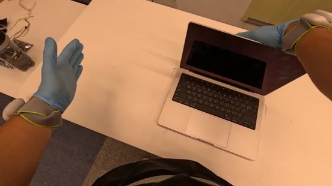
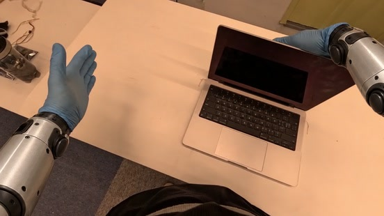
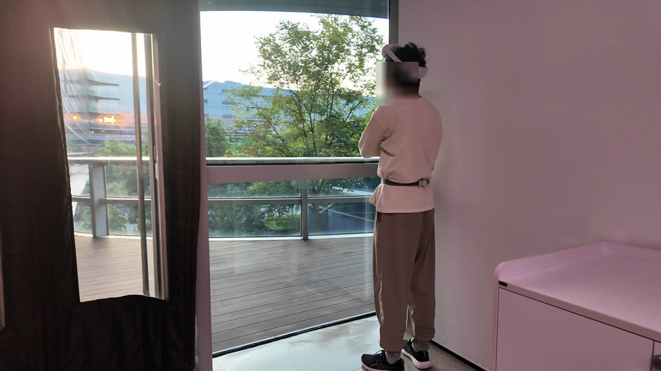
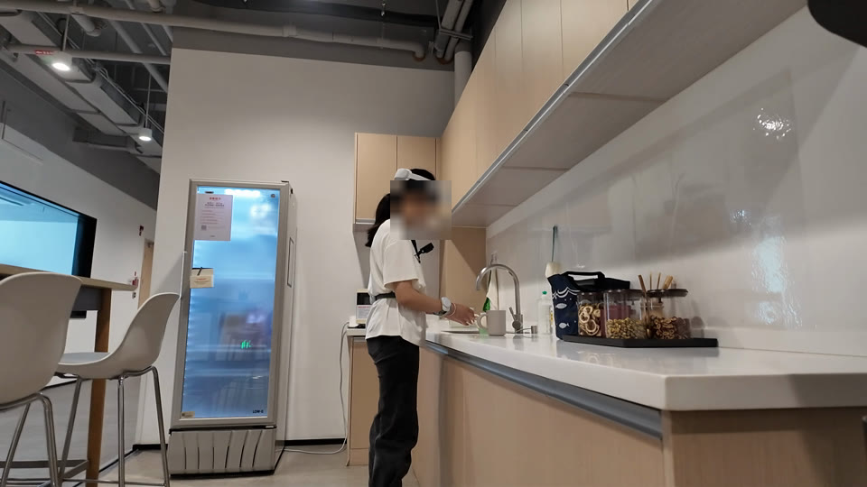
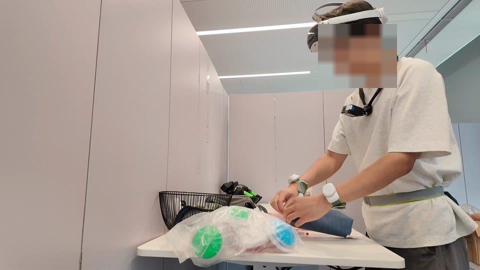
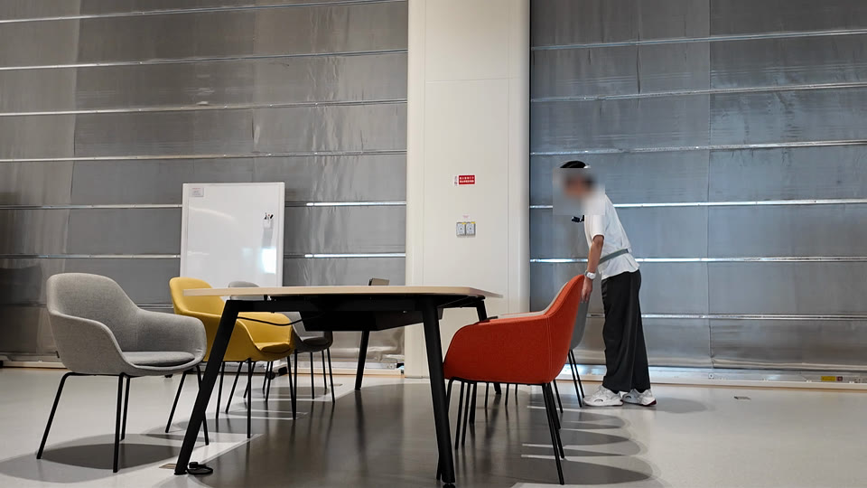
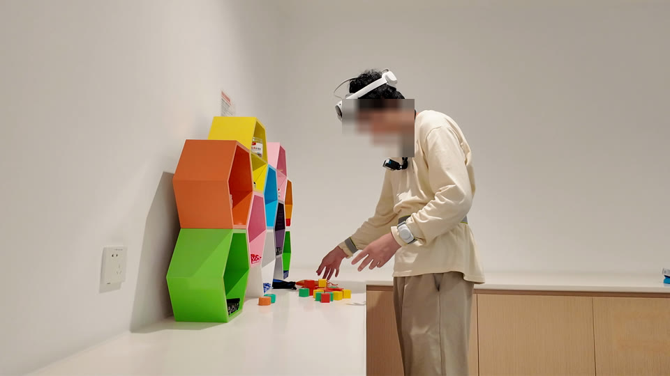
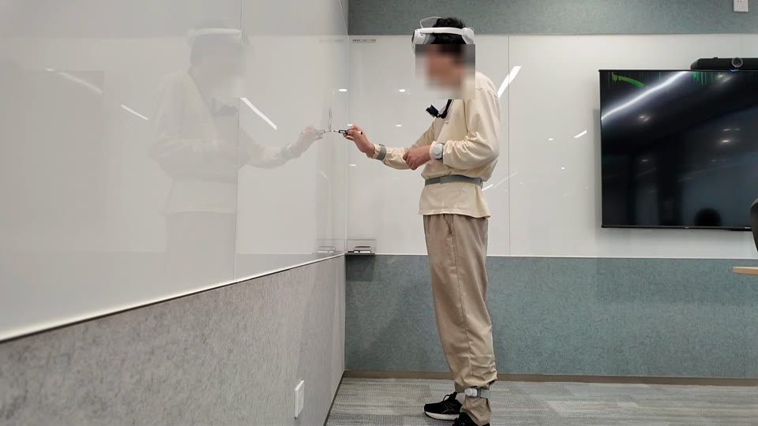

Target-task robot demos
Task supervision comes from humans.
Anonymous authors · ICLR 2027 submission
Human demonstrations. Coordinated humanoid skills.
Zero target-task robot demonstrations.
Whole-body coordination transfers from human demonstrations to a real humanoid.
We align human motion with the robot’s controller, then post-train task-specific VLA policies. Controller-aware action alignment and visual alignment enable zero-shot deployment on Unitree G1.
Task supervision comes from humans.
Coordinated arms, torso, and legs.
200 human demonstrations per task.
Four tasks. Human-only task supervision. Zero-shot robot deployment.
Chair digitally removed; occluded areas are reconstructed. Original preserves the recording. Both versions anonymize faces.
H: Initial SONIC rolloutK: Kinematic reference correctionD: Dynamics-aware refinement
Mean across four tasks · higher is better
Simulation · H → H + K + Ds · lower is better
| Action alignment | Laptop | Refrigerator | Curtain | Drawer | Mean |
|---|---|---|---|---|---|
| H | 0.00 | 0.00 | 28.33 | 56.67 | 21.25 |
| H + K | 46.67 | 31.67 | 51.67 | 58.33 | 47.09 |
| H + K + Ds | 53.33 | 38.33 | 53.33 | 61.67 | 51.67 |


Online IK can conflict with SONIC’s control, disrupting balance and coordination.
Arm and waist IK; SONIC legs.
Endpoint IK + SONIC balance feedback.
Arm IK; SONIC waist and legs.
Everyday tasks across varied environments.








